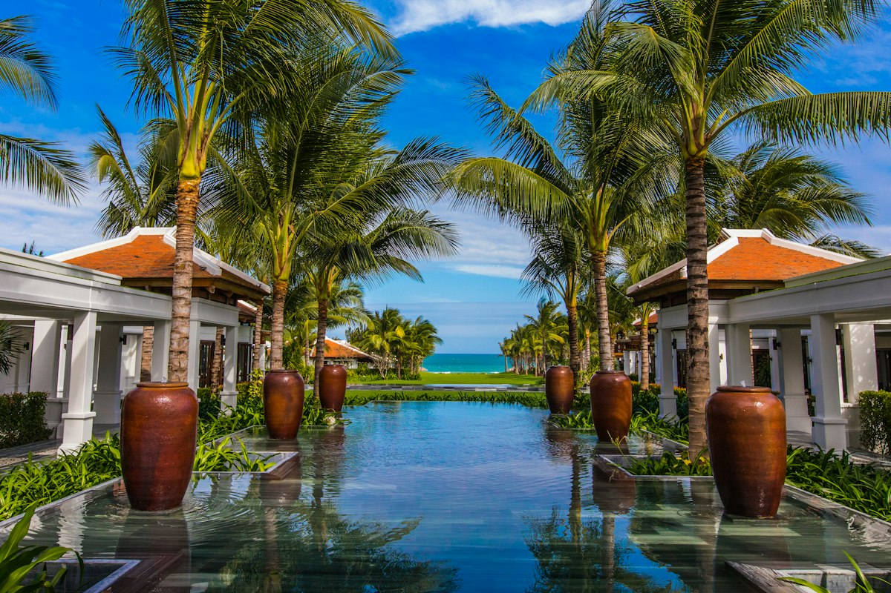

DAY 01｜TUESDAY 12/30
汕頭老埠騎樓巡禮 ✕ 國寶八合里牛肉火鍋
抵埠・漫活・舌尖震撼
14:00 - 15:00｜尊榮入住
海濱無敵海景
汕頭萬豪酒店 (Shantou Marriott Hotel)
坐落於龍湖區核心，客房配備大面落地窗俯瞰海灣，奢享五星級寢具。若滿房首選平替為海濱路【汕頭君華海逸酒店】。
📍 高德地圖導航 ➔
15:30 - 17:30｜開埠歷史
巴洛克騎樓群

實景：汕頭小公園開埠文化陳列館
汕頭小公園開埠文化街區
以紅色八角中山紀念亭為核心，放射狀老街匯聚巴洛克騎樓、老媽宮戲台與鎮邦路美食街。
📍 高德地圖導航 ➔
17:30 - 18:30｜落日絕景
礐石大橋晚霞
西堤公園 (Xidi Park) 日落
昔日紅頭船出海之地。黃昏夕陽將內海灣與跨海礐石大橋染成金紅色，鋼纜與晚霞同框，極具氛圍感。
📍 高德地圖導航 ➔
19:00 - 21:00｜舌尖神殿
國寶必吃首位

實景：八合里海記當日現切黃牛肉盤與牛骨清湯鍋
八合里海記牛肉火鍋 (總店)
堅持當日現宰黃牛，五花趾脆彈、匙柄清甜、生打牛丸爆汁，搭配特調沙茶醬。
📍 高德地圖導航 ➔